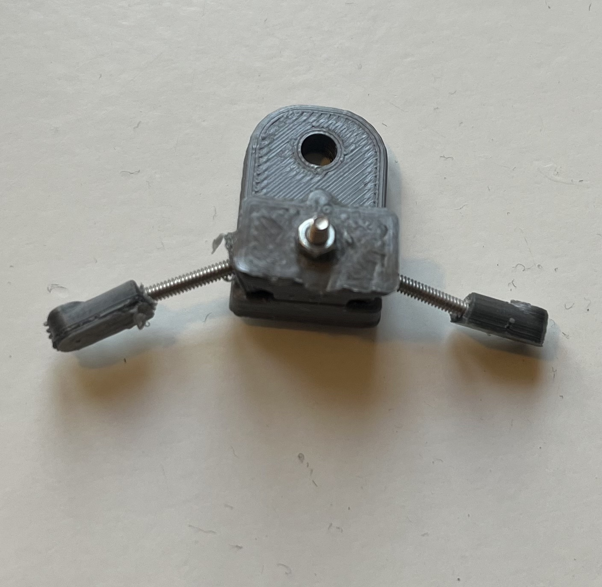

Peripherals part 2: Construction of the linear actuator front
Within this section a small hold for needles is built. It's placed at the front of the linear actuator and therefore can be moved towards the mouse if rewards should be provided.
Parts
Tools
Step 1: Preparation: 3D prints
- Print all following parts, some need to be printed twice.
- It's recommended to print the "rotatable needle hold end" multiple times because the drilling inside is a bit tricky.
Step 2: Print core components
Upper core
Lower core
Step 3: Print rotatable needle hold (2x)
Rotatable needle hold end
Rotatable needle hold core
Step 4: Print needle fixation (2x)
Print settings
Print settings used for testing with a good result at a Creality Ender-3 V2
- Layer height: 0.12 mm
- Infill: 70%
- Nuzzle temperatur: 200°C
- Support: Yes, automatic from PrusaSlicer
- Raft: No
Step 5: After printing
- Use sandpaper to smooth both parts of the ball joint.
-
Clean the holes inside the parts from blocking print artifacts and support structures, e.g. with a small drill.
-
The "rotatable needle hold end" needs to have hole which is tight for a M2 screw. This hole is already in the STL files but gets filled with support most likely.
- Use a 1.5 mm drill to make a 5 mm deep hole, like in the STL file, and use a 2 mm drill to make the entrance larger, go like 1 mm inside. By this it's easier to insert the screw.
Step 6: Combine the 3D prints
An overview of all combined 3D printed parts
Use the overview as an orientation for combining.
Do the following step twice:
- Use a M2 screw (16mm) and place it trough the "rotatable needle hold core". Then turn the "rotatable needle hold end" on the thread of the M2 screw.
Use a M2 screw (16mm) and a M2 hexagon nut to combine both core parts.
-
Before tighten the screw place both moveable needle holds with the ball inside. These should point sidewards and not to the front as shown in the file.
-
Remember to loosen the screws before reorientating the moveable needle holds.
Combined needle hold

Step 7: Adding cannula
On both sides of the linear actuator front a hollow blunt cannula needs to be placed. This is used to provide the rewards.
The cannula needs to go through the rotatable cannula hold end (3D printed part) and should be kept in place by the cannula fixation (3D printed part).
- Backend of cannula needs to have a luer lock connection.
-
The default outer diameter for the cannula would be 1 mm. But as 3D prints tend to fill gaps you will need a clean the hole and by this you can choose a preferred diameter.
-
In order to connect the cannula with the tube attach to both cannulas a part with the number #72-1424 or #72-1425 from the Luer Connector Kit
Picture for visualization with tube already connected

Note
If the holes in the 3D printed parts are slightly to large for the needles and screws you can use glue as support.
Note
An alternative way of the rotatable needle hold is at the bottom of this page. It's a STL file with both parts of the rotatable needle hold and the combining screw. It can be printed by this as one part. With this version the arms a more elastic and can break.
Step 8: Attaching at the Linear actuator
- Use a M4 screw (20mm) and two M4 hexagon nut to combine the 3D printed component to the linear actuator.
- The screw needs to go through the hole in the bigger core 3D part and the front hole of the moveable part of the linear actuator.